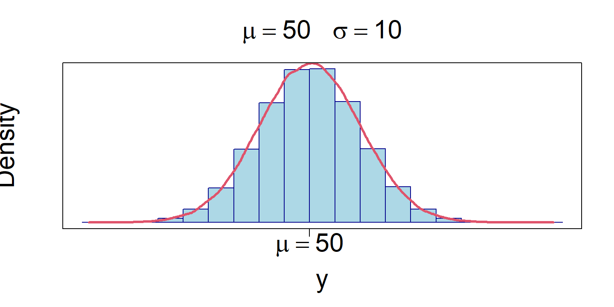
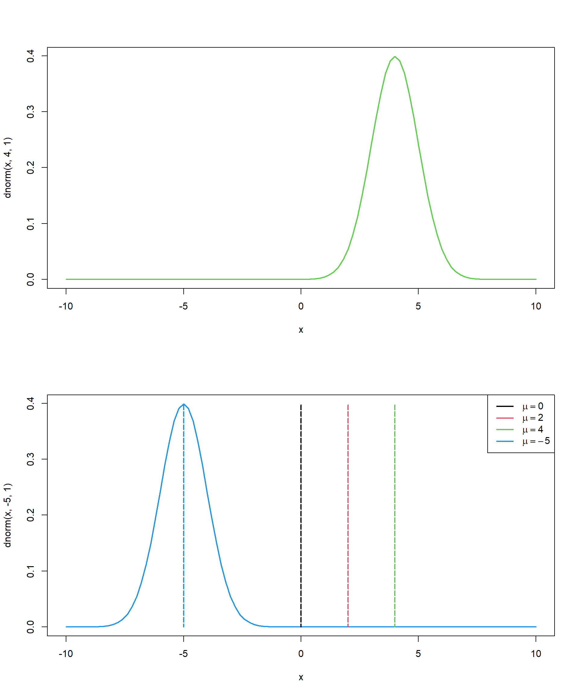

Distribución continua ampliamente usada, permite modelar numerosos fenómenos naturales, sociales y psicológicos,

Esta distribución depende de los parámetros de localización y escala, determinados por la media \(\mu\) y la desviación estándar \(\sigma\).

Una variable aleatoria x se distribuye normal con media \(\Large \mu\) y varianza \(\Large \sigma^2\), se denota de la forma
\[ \Large X \sim N(\mu,\sigma^2) \]
Con valor esperado y varianza
\[\Large E(X)=\mu, \quad \sigma^2=var, \quad \sigma=sd\]
La función de distribución de probabilidad está dada por:
\[ \Large f(x)=\frac{1}{ \sigma \sqrt{2\pi}}e^{\frac{-(x-\mu)^2}{2 \sigma^2} } \]
Sean dos variables aleatorias:
\(\Large Y_1\sim N(\mu_1,\sigma_1^2)\)
\(\Large Y_2\sim N(\mu_2,\sigma_2^2)\)
Donde:
\(\mu_i\) Corresponde al valor de las medias \(\Large \varepsilon\) \(\Large \mathbb R^2\)
\(\sigma_i\) corresponde a las desviaciones estándar con \(\sigma_1>0, \sigma_2>0\)
\(\rho\) corresponde a la correlación entre las variables aleatorias.
Definición se dice que el vector continuo \((y_1,y_2)\) tiene distribución normal de parámetros \(\Large (\mu_1,\sigma_1^2;\mu_2,\sigma_2^2;\rho)\), con función de densidad:
\[\Large f(y_1,y_2)=\frac{1}{2\pi\sigma_1 \sigma_2\sqrt {1-\rho^2}}e^{-\frac{1}{1-\rho^2}[\frac{(y_1-\mu_1)^2}{\sigma_1^2}-2\rho\frac{(y_1-\mu_1)(y_2-\mu_2)}{\sigma_1 \sigma_2}+\frac{(y_2-\mu_2)^2}{\sigma-2^2}]}\] Donde la matriz de varianzas y covarianzas está definda como \(\Sigma\)
\[\Large \Sigma=var(x,y)=\begin{pmatrix} Var(x) & cov(x,y) \\ cov(y,x) & var(y) \end{pmatrix}=\begin{pmatrix} \sigma_2^2 & \rho \sigma_1\sigma_2 \\ \rho \sigma_1\sigma_2 & \sigma_1^2 \end{pmatrix}\]
Esta distribución cumple:
La matriz \(\Large \Sigma\) es simétrica y definida positiva
\(det \Sigma=(1-\rho^2) \sigma_1^2 \sigma_2^2\)
\[\Sigma^{-1}=\frac{1}{(1-\rho^2) \sigma_1^2 \sigma_2^2}\begin{pmatrix} \sigma_2^2 & -\rho \sigma_1\sigma_2 \\ -\rho \sigma_1\sigma_2 & \sigma_1^2 \end{pmatrix}\]
\(\Large Cov(Y_1, Y_2)=\rho \sigma_1 \sigma_2\)
\(E(x,y)=(\mu_1,\mu_2)\)
En este gráfico se puede observar que la distribución normal bivariada cuando la correlación entre las variables x y Y es cero (ρ=0), la superficie dibuja la clásica campana de gauss, en la posición marcada por el vector de medias de la distribución.
Distribución Normal Bivariada \(\mu=(0,0)\), \(\sigma=(5,5)\), \(cov=12.5\) \(\rho=0.5\)
\[\begin{pmatrix} X_1 \\ X_2 \end{pmatrix} \sim \mathcal{N} \left( \begin{pmatrix} \mu_1 \\ \mu_2 \end{pmatrix} , \begin{pmatrix} \sigma^2_1 & \rho \sigma_1 \sigma_2 \\ \rho \sigma_1 \sigma_2 & \sigma^2_2 \end{pmatrix} \right)\]
La función de densidad normal multivariante se define para k variables aleatorias continuas, \(Y_1, Y_2, . . . , Y_k\).
Se dice que el vector \((X_1,...,X_n)\) tiene una distribución normal multivariada si su función de densidad es:
\[\large f(\bar x)=\frac{1}{2\pi^{n/2}\sqrt{det \Sigma}}exp(-\frac{1}{2}(\bar x-\bar \mu)\Sigma^{-1}(\bar x-\bar \mu)^t)\]
Donde:
\(\bar x = (x_1,...,x_n)\) y \(\bar µ = (µ_1,...,µ_n)\) son dos vectores de números reales.
\(\Sigma\) es una matriz de dimensión n×n positiva definida, es decir, \(\bar x \Sigma \bar x^t>0\) para cualquier vector \(x = (x_1,...,x_n)\) de \(\Large \mathbb R^n\),
\(\Sigma^-1\) es la matriz inversa de \(\Sigma\)
El exponente tiene una distribución muestral conocida \[(\bar x-\bar \mu)\Sigma^{-1}(\bar x-\bar \mu)^t)\sim \chi^2_k\]
Algunas propiedades
Cualquier subconjunto de un vector multinormal tiene una distribución multinormal, si en particular los elementos individuales tienen distribuciones normales univariables.
Si C es una matriz de constantes de dimensión \(p Xk\), entonces \(C_x \sim N(C\mu;C\Sigma C^t)\)
Si a es un vector de constantes de dimensión \(1xk\), entonces \(a^tx \sim N(a^t\mu; a^t\Sigma a)\)
Versión univariable
Sea una muestra aleatoria \(x_1,...,x_n\) de tamaño n, de variables aleatorias independientes e idénticamente distribuidas, tomada de una distribución con media \(\mu\) y varianza \(\sigma^2\), el media muestral de estas variables aleatorias está dado por:
\[S_n=\frac{x_1+...+x_n}{n}\] Se establece que en la medida de que n tiende a infinito, la distribución de la diferencia entre la media muestral y su límite cuando se múltiplica por el factor\(\sqrt n\), que es \(\sqrt n(S_n-\mu)\) aproxim a la distribución normal con media cero y varianza \(\sigma/n\), es decir
\[\sqrt n (S_n-\mu)\sim N(0,\sigma^2)\]
Sea el vector aleatorio: \[\bf X_i=\begin{pmatrix} X_{i(1)} \\ \vdots\\ X_{i(k)} \end{pmatrix}\]
La suma de los vectores aleatorios es:
\[\begin{pmatrix} X_{1(1)} \\ \vdots\\ X_{1(k)} \end{pmatrix}+\begin{pmatrix} X_{2(1)} \\ \vdots\\ X_{2(k)} \end{pmatrix}+\cdots+\begin{pmatrix} X_{n(1)} \\ \vdots\\ X_{n(k)} \end{pmatrix}=\begin{pmatrix} \sum_{i=1} ^n X_{i(1)} \\ \vdots\\ \sum_{i=1} ^n X_{i(k)} \end{pmatrix}=\sum_{i=1} ^n X_i\] el promedio es:
\[\frac{1}{n}\sum_{i=1} ^n \bf X_i=\frac{1}{n}\begin{pmatrix} \sum_{i=1} ^n X_{i(1)} \\ \vdots\\ \sum_{i=1} ^n X_{i(k)} \end{pmatrix}=\begin{pmatrix} \bar X_{i(1)} \\ \vdots\\ \bar X_{i(k)} \end{pmatrix}=\bar x_n\]
Para estandarizar la variable se hace uso de \[\Large Z=\frac{X_i-\mu}{\sigma/ \sqrt{n}}\]
lo cual es equivalente a:
\[\frac{\sqrt n \sum_{i=1}^n [X_i-\mu]}{\sigma}\sim N(0,1)\]
El teorema central del límite establece que
\[\sqrt n(\bar X_n-\mu)\longrightarrow N_k(0,\Sigma)\]